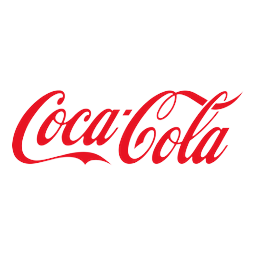
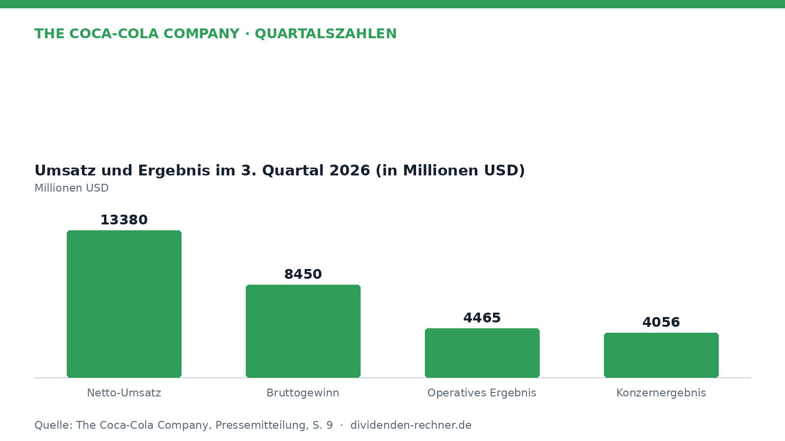
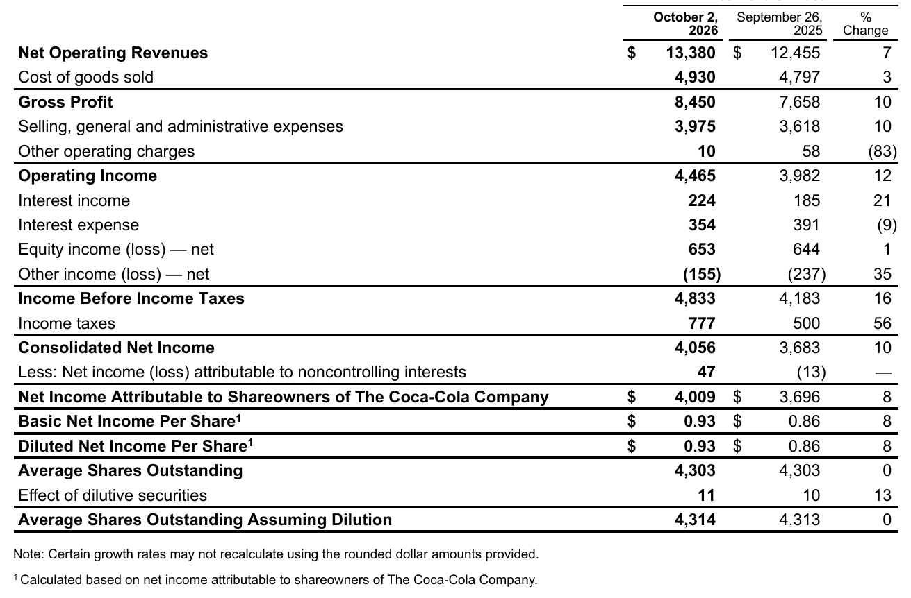
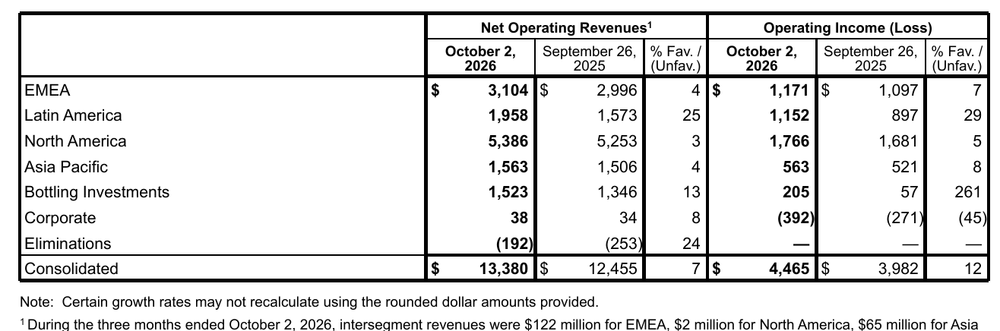
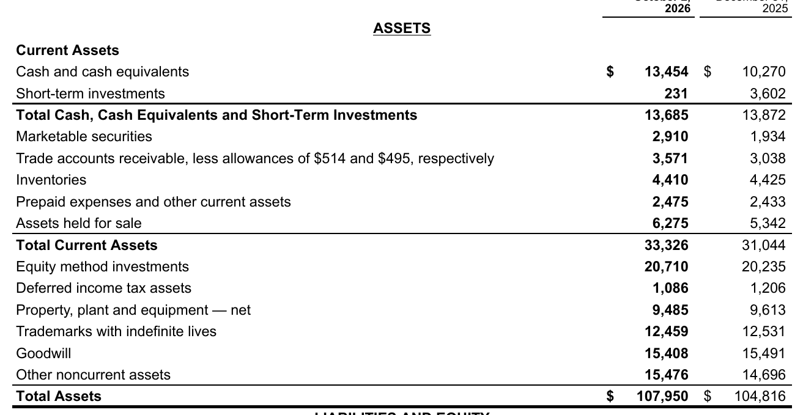

Quartalszahlen

Coca-Cola verdient mehr: Umsatz und Konzernergebnis steigen
The Coca-Cola Company legt die Zahlen für das dritte Quartal 2026 vor. Der Nettoumsatz und das Konzernergebnis steigen im Vergleich zum Vorjahr.

Solides Wachstum im dritten Quartal 2026

Eigene Darstellung nach Daten aus: The Coca-Cola Company, Quartalszahlen vom 2026-10-27.The Coca-Cola Company hat die Ergebnisse für das dritte Quartal 2026 vorgelegt und verzeichnet Zuwächse bei Umsatz und Gewinn. Der Nettoumsatz kletterte auf 13.380 Millionen USD, während im Vorjahreszeitraum ein Wert von 12.455 Millionen USD erzielt worden war. Das entspricht einem Anstieg von 7 Prozent. Getrieben wurde diese Entwicklung unter anderem von einer Zunahme der abgegebenen Konzentratmengen sowie Preisanpassungen in verschiedenen Märkten.

Konzerngewinn- und -verlustrechnung für das 3. Quartal 2026. Quelle: The Coca-Cola Company, Quartalszahlen vom 2026-10-27, S. 9. Ausschnitt nur zugeschnitten, sonst unverändert.Nachfrage und regionale Unterschiede
Das operative Ergebnis verbesserte sich im Berichtsquartal auf 4.465 Millionen USD, nach 3.982 Millionen USD im Vorjahr. Wie der detaillierte Bericht zeigt, verlief das Geschäft regional unterschiedlich. Während Nordamerika als größter Einzelmarkt stabile Umsätze und ein moderates operatives Plus verzeichnete, zeigten sich in Regionen wie Lateinamerika deutlich höhere Zuwächse bei Umsatz und Ergebnis. Das Konzernergebnis belief sich auf 4.056 Millionen USD (Vorjahr: 3.683 Millionen USD). Das Unternehmen hob zugleich hervor, dass man durch agile Ausrichtung in den globalen Systemen auf eine stabile Nachfrage trifft.
„Unsere Ergebnisse dieses Quartals demonstrieren die anhaltende Dynamik unseres Systems, was uns Zuversicht für unsere aktualisierte Ganzjahresprognose gibt.“
— Henrique Braun, CEO von The Coca-Cola Company
Segmente und Marken im Detail

Umsatz und operatives Ergebnis nach Segmenten (3. Quartal 2026). Quelle: The Coca-Cola Company, Quartalszahlen vom 2026-10-27, S. 13. Ausschnitt nur zugeschnitten, sonst unverändert.Im Portfolio zeigten sich differenzierte Trends über die verschiedenen Getränkekategorien hinweg. Der Bereich der kohlensäurehaltigen Erfrischungsgetränke wuchs solide, gestützt durch Zuwächse bei der Hauptmarke Coca-Cola sowie bei zuckerfreien Varianten. Das Segment Wasser, Sport-, Kaffee- und Teedrinks trug ebenfalls zum Volumenwachstum bei, wobei Sportdrinks teilweise rückläufig waren. Die geografische Verteilung der operativen Segmente verdeutlicht, dass insbesondere Schwellenländer und internationale Märkte Impulse setzten, während in einigen entwickelten Märkten teils gegenläufige Effekte durch Mix-Verschiebungen und höhere Betriebsausgaben auftraten.
Bilanzstruktur und finanzielle Stabilität
Ein Blick auf die Bilanz zeigt die finanzielle Verfassung des Konzerns zum Stichtag des zweiten Oktobers 2026.

Konzernbilanz per 2. Oktober 2026. Quelle: The Coca-Cola Company, Quartalszahlen vom 2026-10-27, S. 11. Ausschnitt nur zugeschnitten, sonst unverändert.Das Unternehmen hält beträchtliche flüssige Mittel und investiert fortlaufend in das operative Geschäft sowie in die Kapitalstruktur. Die laufenden Verbindlichkeiten und langfristigen Schulden spiegeln das planmäßige Finanzierungs- und Liquiditätsmanagement wider, das durch den anhaltend starken Mittelzufluss aus der operativen Geschäftstätigkeit gestützt wird.
Ausblick und Risiken
Für das verbleibende Geschäftsjahr blickt das Management auf Basis der bisherigen Dynamik optimistisch nach vorn und hat die Prognosen für das Gesamtjahr angepassterweise präzisiert. Zu den anhaltenden Risiken zählen unvorhersehbare geopolitische und wirtschaftliche Bedingungen, Währungsschwankungen in verschiedenen Regionen sowie mögliche Kostensteigerungen bei Rohstoffen und Verpackungen. Auch regulatorische Änderungen oder Einflüsse aus anhängigen Steuerstreitigkeiten können die künftige finanzielle Entwicklung beeinflussen.
Quelle: The Coca-Cola Company, Quartalszahlen vom 2026-10-27. Rechenwege eigene Berechnung. Keine Anlageberatung.
Hinweis: Dieser Text dient der allgemeinen Information und ist weder Anlage-, Steuer- noch Rechtsberatung. Kapitalanlagen sind mit Risiken verbunden, bis hin zum Totalverlust.